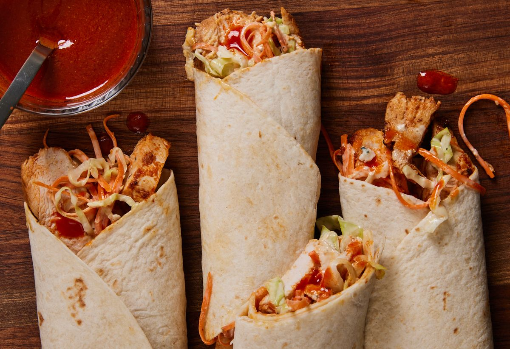

Chicken wrap description
Crispy flour tortilla loaded with juicy chicken, bacon, lettuce, avocado and cheese drizzled with a delicious spicy Ranch dressing. This chicken wrap is the perfect combination of flavor
Ingredients
- 200 gms Chicken Thighs cut into small cubes
- ½ tsp turmeric powder
- ½ tsp Red Chili Powder
- ¼ tsp pepper powder
- ¼ tsp Cumin Powder
- ¼ tsp garam masala
- salt to taste
- ¼ cup onion sliced
- 1 tsp oil
Steps
-
Divide the chicken, ranch, cheese, and cilantro between 4 tortillas. Lay the tortillas on a work surface and put about 1/2 cup (62 g) of the chopped chicken on each. Top the chicken on each tortilla with 1 tablespoon (14.8 ml) (15 g) of ranch dressing and 2 tablespoons (29.6 ml) (14 g) of mozzarella cheese.
If you'd like to include minced cilantro, put about 1 tablespoon (15 ml) (4 g) on each wrap.
-
Fold each tortilla to secure the ends and side. Bring 2 sides of the tortilla up so the filling settles in the center. Then tuck the ends of the tortilla towards the center. Hold these in place and use your thumbs to roll a long side of the tortilla over the filling. Keep rolling the wrap over so it's completely closed.
-
Heat a grill pan and cook the wraps for a few minutes on each side. Put a grill pan on the stove and turn the burner to medium or heat a small grill to medium. Spread a little oil or cooking spray on the grill so your wraps don't stick and place the wraps on the hot grill. Cook them for 1 to 2 minutes on each side.
The tortilla will become crisp and golden brown once it's grilled long enough.
-
Slice and serve the chicken ranch wraps. Turn the burner off and put the wraps on serving plates. Cut each wrap in half and serve them immediately.
Store the leftover wraps in an airtight container in the refrigerator for up to 2 to 3 days. Keep in mind that the wrap will become softer as it's stored.